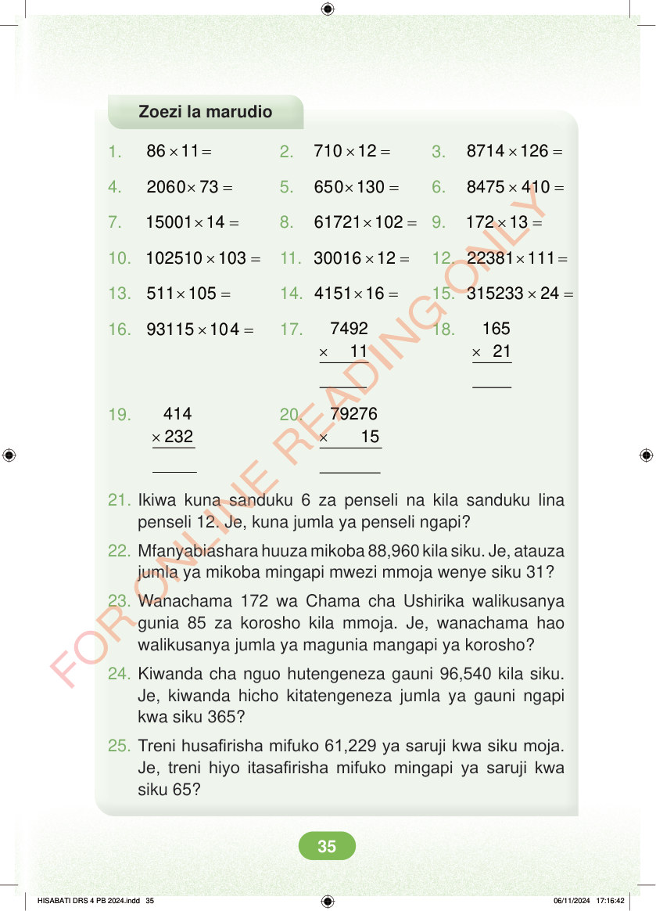

<!DOCTYPE html>
<html lang="sw-TZ"><head><meta charset="utf-8"><meta name="viewport" content="width=device-width,initial-scale=1">
<title>Hisabati: Kitabu cha Mwanafunzi Darasa la Nne</title>
<meta name="title-id" content="pg041_sec001"><meta name="page-section-id" content="42">
<link href="./content/tailwind_output.css" rel="stylesheet"><link href="./assets/libs/fontawesome/css/all.min.css" rel="stylesheet"><link href="./assets/fonts.css" rel="stylesheet">
<style>body{margin:0;background:#eef1ed}main{width:100%;display:flex;justify-content:center;padding:1rem 1rem 5rem;box-sizing:border-box}#content{width:100%;display:flex;justify-content:center}.pdf-page{position:relative;width:min(calc(100vw - 2rem),56rem);aspect-ratio:540.8980102539062/750.6610107421875;background:white;box-shadow:0 4px 24px #0002;overflow:hidden}.pdf-page img{position:absolute;inset:0;width:100%;height:100%;object-fit:fill}</style>
</head><body><main><h1 class="sr-only" id="page-heading">Ukurasa wa 41</h1><div id="content" class="opacity-0"><section role="article" data-section-type="pdf_accessible_page" data-section-id="pg041_sec001" aria-labelledby="page-heading" class="pdf-page"><p class="sr-only" data-id="pg041_gp001_tx001">Zoezi la marudio 1. × = 86 11 2. × = 710 12 3. × = 8714 126 4. × = 2060 73 5. × = 650 130 6. × = 8475 410 7. × = 15001 14 8. × = 61721 102 9. × = 172 13 10. × = 102510 103 11. × = 30016 12 12. × = 22381 111 13. × = 511 105 14. × = 4151 16 15. × = 315233 24 16. × = 93115 104 17. × 7492 11 18. × 165 21 19. × 414 232 20. × 79276 15 21. Ikiwa kuna sanduku 6 za penseli na kila sanduku lina penseli 12. Je, kuna jumla ya penseli ngapi? 22. Mfanyabiashara huuza mikoba 88,960 kila siku. Je, atauza jumla ya mikoba mingapi mwezi mmoja wenye siku 31? 23. Wanachama 172 wa Chama cha Ushirika walikusanya gunia 85 za korosho kila mmoja. Je, wanachama hao walikusanya jumla ya magunia mangapi ya korosho? 24. Kiwanda cha nguo hutengeneza gauni 96,540 kila siku. Je, kiwanda hicho kitatengeneza jumla ya gauni ngapi kwa siku 365? 25. Treni husafirisha mifuko 61,229 ya saruji kwa siku moja. Je, treni hiyo itasafirisha mifuko mingapi ya saruji kwa siku 65? HISABATI DRS 4 PB 2024.indd 35 HISABATI DRS 4 PB 2024.indd 35 06/11/2024 17:16:42 06/11/2024 17:16:42</p></section></div></main><div class="relative z-50" id="interface-container"></div><div class="relative z-50" id="nav-container"></div><script src="./assets/offline-preloader.js"></script><script src="./assets/scorm.js"></script><script src="./assets/base.bundle.local.js"></script></body></html>